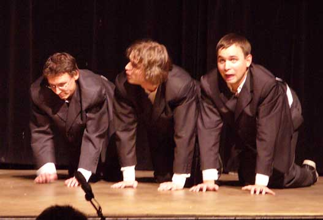

|
· 12. 11. 2006 : NEJLEPŠÍ BRÁNICE DOKOØÁN |
|
Vèera se Krvik Totr v roli produkèních (s neopomenutelnou a vynikající Markétou Hoskovcovou) postavili na piedestal tylovského organizátorství. Náš ètvrtı roèník festivalu autorského humoru Bránice dokoøán v podstatì nemìl chybu. Mìsíce pøíprav a vìci jako podrobnı rozpis kdy kdo co se vyplatily, festival nevázl a prakticky a� do konce jel pøesnì podle rozpisu. Místní technika byla velice vstøícná a ve všem nám pomohla, vìtšinu odsvícení/odzvuèení jsme si však udìlali sami, co� rovnì� velmi prospìlo. V zvukaøské kabinì zkrátka nechybìl cit pro konkrétní divadlo. Hrálo se jen na velkém sále, bylo tedy ménì divadel, ale zato nìjak lépe vybraná, navíc bleskurychlé pøestavby zaplòoval náš milı DJ Koumák v baru (jestli�e loni byl produkèní tøešinkou BarB, letos to byl právì Infokout/Infonovotnı, kde kraloval Koumes). Program zkrátka skvìle frèel. Zvìtšující se krize je v publiku. To bylo skvìlé, ohromnì pøívìtivé a skuteènì na humor naladìné, chyby odpouštìjící... Bylo ho však málo, zase o velkı kus ménì ne� loni. Propagace pøitom od roku probíhá intenzivnìji a preciznìji. Ale jak bylo øeèeno, ti, kteøí pøišli, byli ohromnì fajn a je tøeba jim podìkovat za vıteènou atmosféru. Suma sumárum - much bylo tradiènì hodnì, ale divák je prakticky nezaznamenal. Nu a soubory? Rosická pohádka dopadla podle všeho dobøe, Boršè (pøes Hanèinu ztrátu hlasu) odstartoval perfektnì dospìláckou èást, navíc nejen Evu, která mìla narozeniny, ale i veškeré publikum dojal tajenı dárek: 29 sluneènic spuštìnıch na tahu na jevištì... Boršè nasadil obrovskou la�ku. Tu pak horko tì�ko dohánìli Krvik Totr, kteøí coby produkèní festivalu nemìli èas ani na zkoušku (by� jen textovou), ani tøeba jen na prošlapání jevištì. První polovina Do�ínek (víceménì uzavøeného setu scének a písní á la Eliadovka) podle toho vypadala - byli jsme strašní. Z hrùzy vystupovala pouze ústøední dvojice Novotnı/Kout, která se tentokrát skvìle naladila a nic si nenechala vzít, a Petra Biòovcová, která po tøech letech strávenıch v Divadílnì v zázemí nahradila party Anièky Kuèerkové (do Austrálie vymizivší). Petra byla fantastická, skvìlı materiál pro re�ii a koneènì zase po dlouhé dobì nehereckı èlen Krvik Totr. Druhá polovina našeho vystoupení byla naopak skvìlá, bez vıjimky. Vrcholná dvojice Ogródek a Nejúspìšnìjší hra všech dob ze zvláštních dùvodù nemá chybu. Jestli�e jsme tedy na zaèátku vinou prosté nemo�nosti pøipravit se a nedostatku sebemenšího pøídìlu klidu byli doslova ostudou festivalu, viditelnou pílí a naladìním se jednoho na ka�dého jsme nakonec zaslou�enì slavili velikı úspìch. Po nás pak následovala ta nejvìtší a dojímavá pecka, praotec-inspirátor všech autorskıch divadel a nejvíc pak našeho, Jiøí Suchı s Pøemyslem Rutem, kteøí nádhernì zahráli zkrácenou podobu poloimprovizovaného recitálu Zavíráme, pojïte dál divadla Semafor. Petr s Tomášem si nemohli ujít tu pøíle�itost Semafor uvést (a jak Tomáš pravil, ve vzduchu visela dojímavá konotace s chvílí, kdy Suchı se Šlitrem podobnì dojatì uvádìli Louise Armstronga v Lucernì). Kupodivu se jim podaøilo v onom úvodu vyimprovizovat mnoho dobrıch fórù. Nu a Semafor byl jednoznaènì o tøi sta pater nad vším, co se kdy na Bránici konalo, a pøitom tak prosté. Teèku v tradici obstarali pokraèovníci Puchmajerù, Antonín D. S. s pøedpremiérou vcelku vıpravné hry Dítì! - a nutno øíci, �e i oni naplnili slova o vynikajícím festivalu! Soukromı dodatek: Petr s Tomášem se pøipravili natolik dobøe, �e festival nejen�e zvládli, ale ještì si jej u�ili. Ve finále si pak sami nadìlili dárek, kdy� si u�ili Semafor a ètyøi ú�asné hodiny brebentili s Pøemyslem Rutem. Jemu patøí nejvìtší dík, nebo� to on, z dobré a nejlepší známosti, pøemluvil Jiøího Suchého. Jak pravila Markéta Hoskovcová: "Tak teï u� ten festival mù�eme skonèit. Leda�e bychom sehnali Woody Allena..." PS: Opravdu vıjimeènı festival. Eva z Boršèe slavila narozeniny a zahrála si pøedmateøskou pøedderniéru. Krvici zde uvítali 5000. diváka (ale zapomnìli to uvést...). Semafor - událost vıjimeèná sama o sobì. A Antonín D. S. uvedl své Dítì! coby pøedpremiéru. |
|
Do�ínky (Tomáš Kout - Filip Votava - Pavla Drtinová - Petr Jedinı Novotnı)  Ovce (Petr Jedinı Novotnı - Filip Votava - Tomáš Kout) |